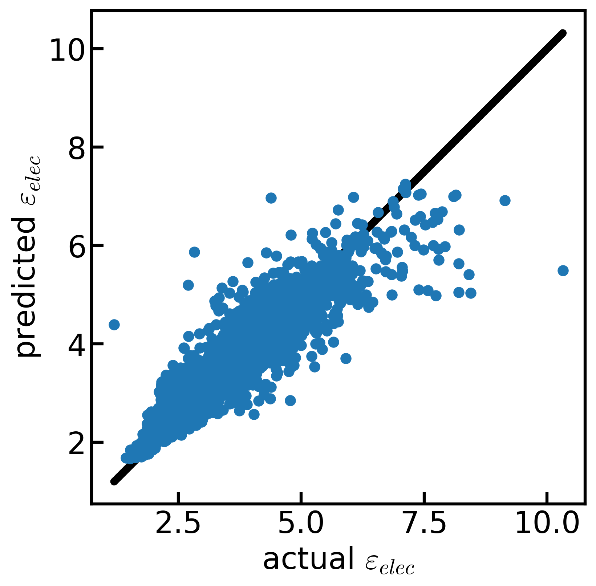
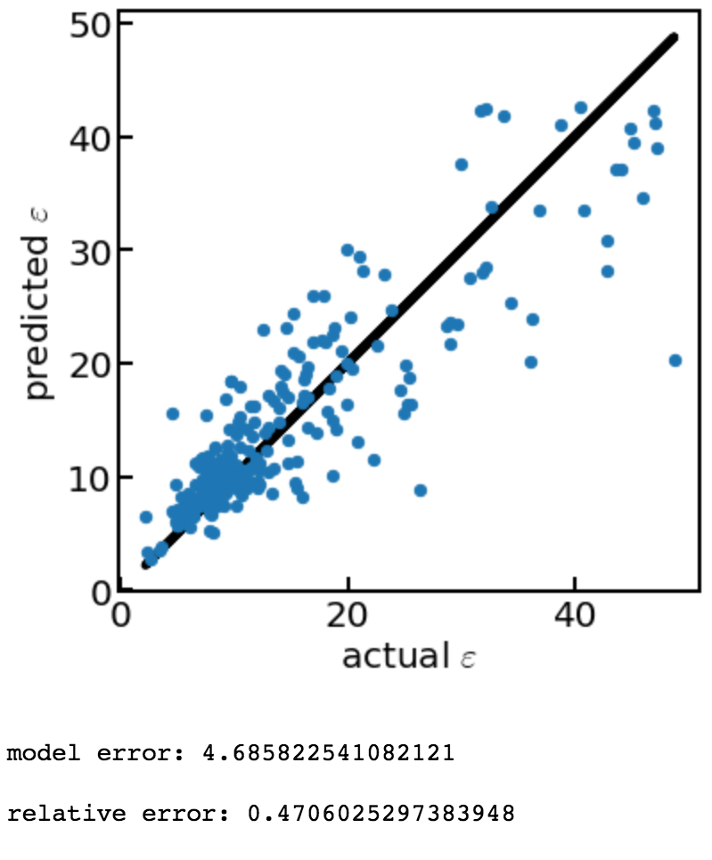
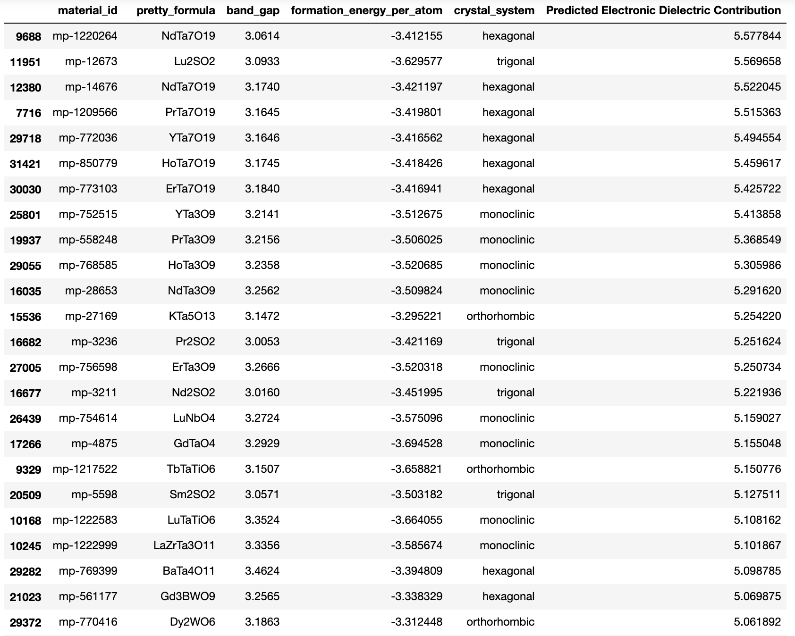
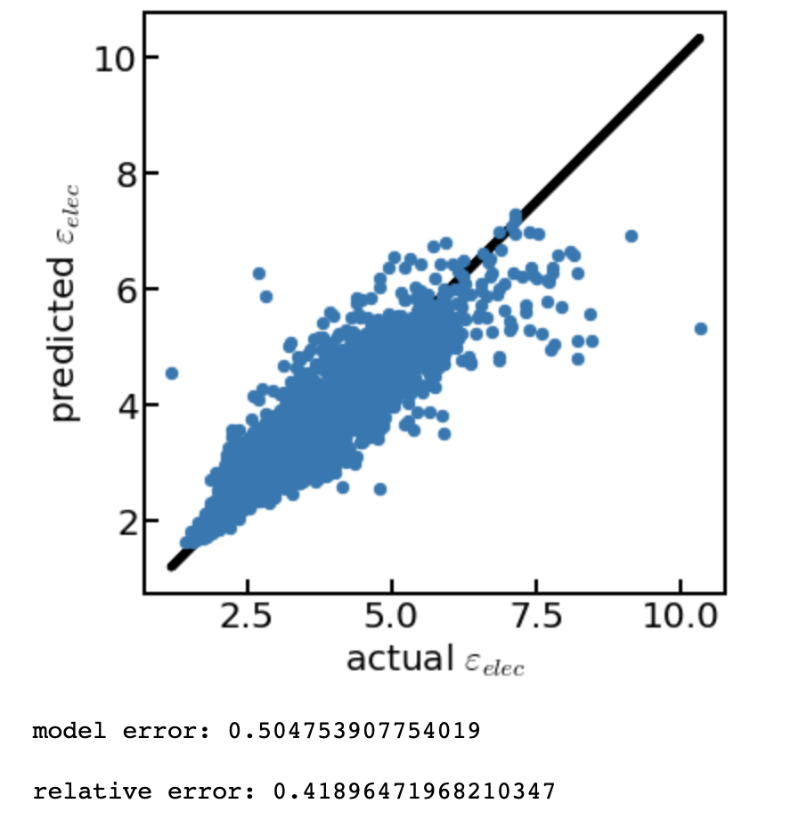

Final presentations¶
This is it! After three weeks of intense focus on MI, you’re ready to showcase what you’ve learned in your self-directed research projects. We’ll be starting final presentations on Zoom at 2:00PM PDT and you’re welcome to invite family and friends to this event! 🙌
Before then, please edit this page on GitHub to add everything in square brackets:
Your emoji (Emojipedia)
Presentation title
Description
A relevant figure that you created
Detailed instructions for how to do this can be found in Tuesday’s mini-lesson on GitHub pull requests.
The following presenters are ordered alphabetically by first name.
To our guests: Check out the cool projects these students have made! 😎
Alexa 🍉¶
Title: Using Machine Learning to Predict High-k Dielectrics

Description: To meet demands for high-k dielectrics, we must train a machine learning model to predict the total dielectric contribution for elements in the Materials Project that don’t already have dielectric constants. With the use of linear regression and cross-validating our data, we were able to achieve low relative error. This means that after minimizing the features and properties that would give us the best results to observe, our models get better predictions at the end of our data analysis. After gathering some promising materials, we are ready to consider their sustainability, requiring more research and experimental validation to finalize our list.
Eddie ☢️¶
Title: Screening Materials Project for high-k dielectrics using machine learning methods
{kind=link}
Description: There is a growing demand for new high-k dielectric materials, which are instrumental to the functionality and miniaturization of complementary metal-oxide-semiconductor (CMOS) transistors. Of the thousands of materials and properties stored in the Materials Project database, only a subset contains information about the dielectric constants. We are able to design data-driven prediction models using supervised machine learning methods and cross-validation to estimate the dielectric constants for the remaining materials. By using a random forest regression model—presenting 39% relative error—we identify nearly 30 compounds that were not previously studied for this application, each with bandgaps in the insulator/dielectric range, a formation energy greater than the current industry standard SiO2, and large k values. Further modeling and cost analysis will allow us to narrow our list of candidate materials.
Kevin 🤯¶
Title: Machine learning-driven methods to predict the unknown dielectric constant of materials
{kind=link}
Description: With Moore’s Law coming into play, electronics are becoming smaller as the amount of transistors doubles around every two years. These transistors therefore need to have incorporated a dielectric material capable of storing more charge as well as have a band gap large enough to prevent current leakage. These characteristics generally have an inverse relationship, which makes it difficult to select dielectric material that can accommodate both. There are also many materials that do not have a dielectric constant documented, and require a strenuous density functional theory calculation to figure out. Using a random forest regression machine learning model and data provided from the Materials Project, our group was able to provide estimations of these unknown dielectric constants with a 47% relative error. This provides further materials to explore as potential dielectrics with both a relatively high dielectric constant and large band gap, both ideal for advancing electronics.
Luis 🏋️♂️¶
Title: Predicting Tomorrow’s High-k Dielectric Materials Using Machine Learning
{kind=link}
Description: Moore’s Law is the observation that the number of transistors in an integrated circuit doubles about every two years. In order to keep up with this law, scientists and engineers have been searching for the next dielectric materials that will continue to push this law forward. Using data acquired from the Materials Project database, we were able to predict the electronic dielectric component for materials which had not yet been analyzed before via density functional theory by using machine learning. The model used was a random forest regression and it was trained using materials who’s electronic contribution to the dielectric was already compiled using DFT. Although actual scientific experimentation is needed to verify the results, the model seems to have successfully predicted a new list of promising materials which may usher in a new golden age of technology.
Mack 🌄¶
Title: Using machine learning to seek ecological high-k dielectrics for microelectronics

Description: As electronics become smaller, we must redesign components that don’t scale down. Silicon dioxide dielectrics experience electron tunneling and charge leakage in micro-transistors, so a compound with a high dielectric constant and a large band gap is required. Generally, these are inversely related, but there are exceptions. Since not all conceivable compounds have a calculated dielectric value, a model was trained on the Materials Project database to predict the values with a low relative error of 0.48. Filtering these predictions for compounds comprised of abundant elements produced multiple candidates for further investigation. Considering materials that are non-toxic and easily obtained for engineering problems is a vital application of machine learning.
Megan 🚀¶
Title: The Future of CMOS transistors
{kind=link}
Description: Is the most fabricated device in the history of humankind facing a performance plateau? As the thickness of dielectrics become even smaller, the associated leakage effects from this have forced the search for novel materials with high-k dielectric constants. The development of these new materials is essential for advancement in modern electronics and critical to high-performance device fabrication. Our research team sought to find potential material candidates for the next generation of CMOS transistors using a data-driven approach by leveraging the Materials Project database and machine learning (ML). Using a random forests ML model, we were able to analyze the importance score of each feature from our training data set, which in turn allowed for further prioritization of features that had a stronger influence on predicting our desired output of the electronic dielectric contribution. Our ML model continued to improve in accuracy and reached a relative error between 0.39 – 0.41. Furthermore, the results from the ML model enabled for prediction of material candidates that had band gaps > 3 eV and predicted electronic dielectric constants within a range of 5.0 – 5.5.